Photo credits
The food photos come from Wikimedia Commons and are used under the licenses below. Photos of searched foods come from Open Food Facts.
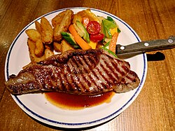
Steak (beef sirloin)
Ceeseven, CC BY-SA 4.0, via Wikimedia Commons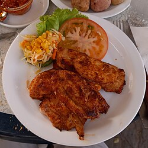
Chicken breast
Gerda Arendt, CC0, via Wikimedia Commons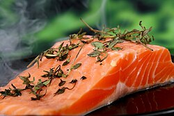
Salmon
NjoyHarmony, CC0, via Wikimedia Commons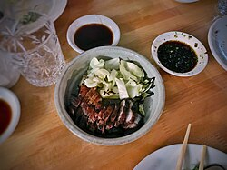
Pork belly
T.Tseng, CC BY 2.0, via Wikimedia Commons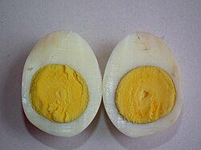
Egg
Ramesh NG, CC BY-SA 2.0, via Wikimedia Commons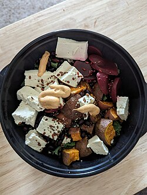
Tofu
3steph14, CC BY-SA 4.0, via Wikimedia Commons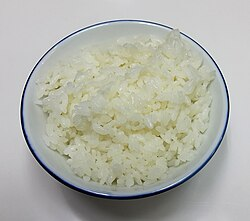
White rice
Douglas Perkins, CC0, via Wikimedia Commons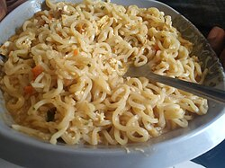
Noodles
Dammy Kaka, CC BY-SA 4.0, via Wikimedia Commons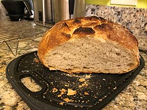
Bread
Nutrition, Food Safety & Health, CC0, via Wikimedia Commons Potato
Potato
Scott Bauer, USDA ARS, Public domain, via Wikimedia Commons Broccoli
Broccoli
Fir0002, GFDL 1.2, via Wikimedia Commons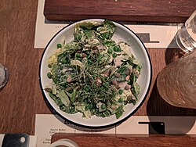
Salad greens
Andy Li, CC0, via Wikimedia Commons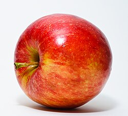
Apple
Abhijit Tembhekar from Mumbai, India, CC BY 2.0, via Wikimedia Commons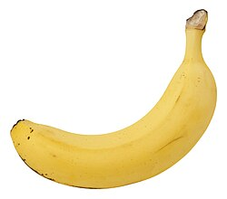
Banana
Evan-Amos, CC BY-SA 3.0, via Wikimedia Commons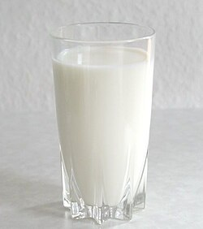
Milk
Stefan Kühn, CC BY-SA 3.0, via Wikimedia Commons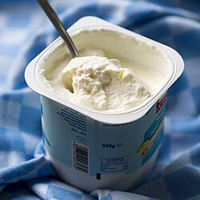
Greek yogurt (plain)
Takeaway, CC BY-SA 4.0, via Wikimedia Commons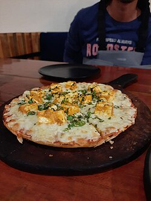
Cheese pizza
Wind Hashira, CC BY-SA 4.0, via Wikimedia Commons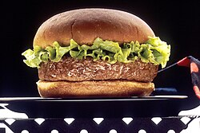
Hamburger
Len Rizzi (photographer), Public domain, via Wikimedia Commons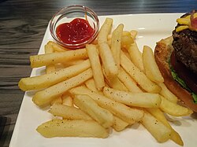
French fries
Ceeseven, CC BY-SA 4.0, via Wikimedia Commons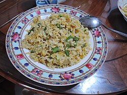
Fried rice
Peachyeung316, CC BY-SA 4.0, via Wikimedia Commons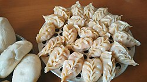
Dumplings
Nature42, CC0, via Wikimedia Commons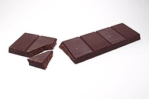
Chocolate
SKopp, CC BY-SA 3.0, via Wikimedia Commons